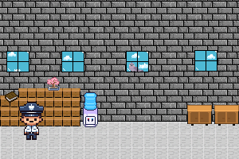

Banco
O dinheiro na carteira some rápido. No banco, ele fica guardado para as contas e vira investimento.
Você faz
- Deposita e saca dinheiro
- Paga as contas da casa e os eventos inesperados
- Abre a poupança, na semana 3
- Compra cotas de fundos imobiliários, na semana 4
Você aprende
- A diferença entre dinheiro na mão e saldo
- Como vencimento e juros de atraso funcionam
- O que é rendimento, risco e diversificação